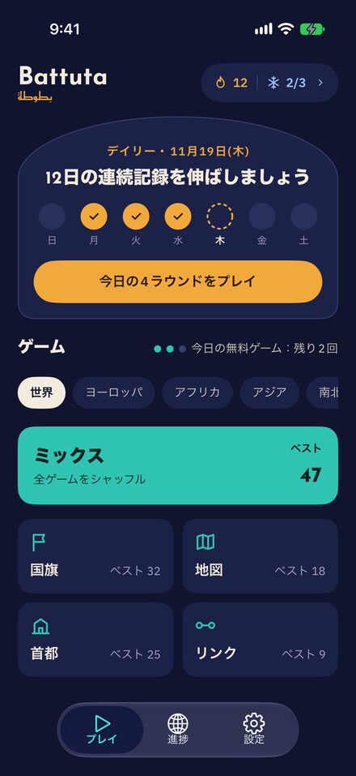
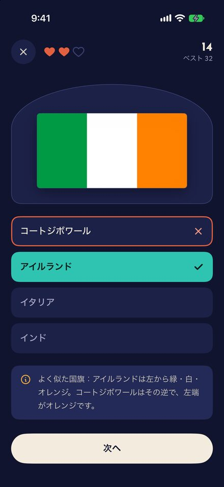
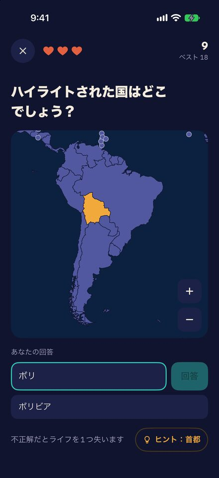
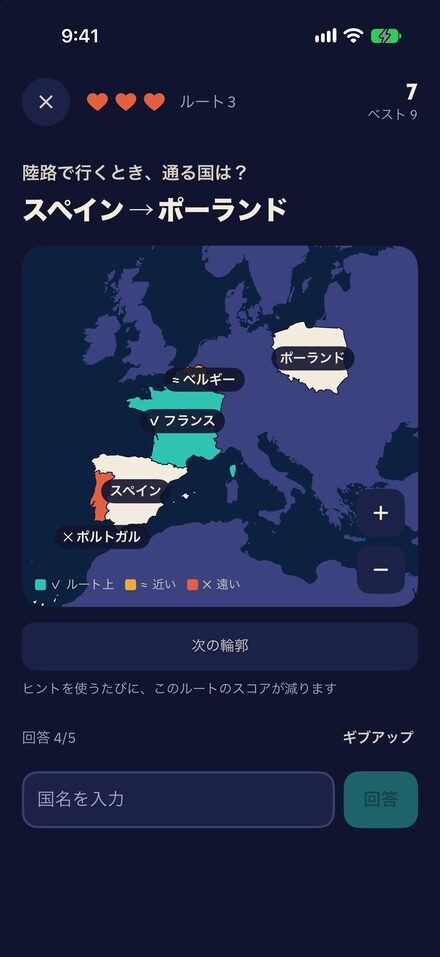
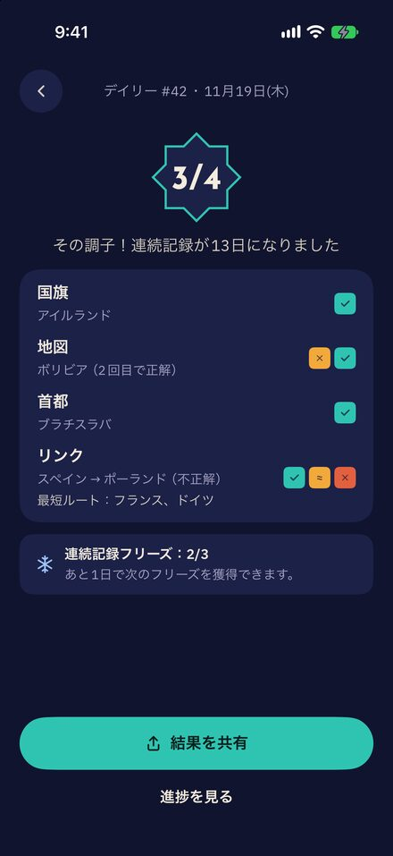

あなたは世界をどれだけ知っていますか？
Battutaは、毎日新しい問題に挑戦できる、iPhoneとiPad向けの地理クイズです。国旗を当て、地図で国を探し、首都を答え、2つの国の間にある国を考えましょう。
App StoreでBattutaをダウンロード




5つの遊び方
- 国旗：1つの国旗に、選択肢は4つの国。不正解の選択肢にはよく似た国旗の国が並びます。
- 地図：ハイライトされた国の名前を答えるか、指定された国を地図上で探します。
- 首都：国と首都を結びつけます。
- リンク：2つの国が示されます。その間にあるのはどの国でしょう？
- ミックス：4つのゲームをシャッフルして出題します。
毎日新しいチャレンジ
1日4ラウンド。問題は全プレイヤー共通です。連続記録を伸ばし、プレイできない日に備えて連続記録フリーズを獲得しましょう。結果は、ネタバレにならない画像で共有できます。
全195か国を収録
すべての国旗、首都、国境を収録しています。ベストスコアを更新し、Game Centerのランキングで上位を目指しましょう。
プライバシー重視、オフラインで遊べる
広告なし、トラッキングなし、アカウント登録なし。Battutaはインターネットに接続しなくても遊べ、データを一切収集しません。